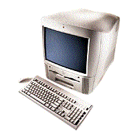

iMac What's Inside? iMac, now available for U.S. $1199, includes a Pentium-toasting 266MHz PowerPC G3 processor, 32MB SDRAM, 6GB hard disk drive, 24x CD-ROM drive, built-in 56K modem, 10/100Base-Tx Ethernet, two built-in 12Mbps Universal Serial Bus ports and more&emdash;plus Mac OS 8.5 and a ton of great software.
The world's best-selling personal computer now comes in blueberry, strawberry, tangerine, grape and lime&emdash;and at an even more affordable price. Besides being the easiest way to whisk you to the Internet, iMac far outperforms other low-cost computers; its processor humbles the Pentiums in office PCs four times its price.
iMac is easy to buy (it comes complete with everything you need). Easy to set up (just plug and play). Easy to use (one click and "hello, Internet"). And designed to make you want to reach out and touch it. It's even ready for the latest ultrafast data lines. Because iMac not only looks like it's from the future. It can actually take you there.
Apple Computer, Inc. The Apple Education Site is located at http://www.apple.com/education/

Power
Macintosh G3 All in One Talk
about speed! This boy is blazing fast, easy to use, occupies a small
footprint, and is absolutely perfect for the school setting. Designed
for education customers, Power Macintosh G3 all-in-one computers
deliver the features most requested by educators today; in a single,
convenient package. They provide state-of-the-art technology and
outstanding performance that make multimedia creation and playback
more accessible; and more affordable, than ever. Built around the
same high-performance PowerPC G3 processor that sparked the success
of Apple's current line of desktop systems, these computers are fast
and ready for multimedia and the
Internet.Education-oriented
design. Features the convenient
all-in-one form factor preferred by educators. Allows for future
expansion, through flexible features and use of industry-standard
components. Incorporates a new logic board tray that protects
internal components while supporting easy access for expansion or
servicing. Outstanding performance,
graphics, and communications. Based
on the high-performance PowerPC G3 processor, which features
performance-boosting backside level 2 cache and fast bus speeds.
Features built-in
Ethernet for fast and easy
connection to school networks. Integrates an advanced graphics
accelerator chip for high-quality 64-bit graphics and quick, smooth
2D and 3D viewing and editing.
High-quality
multimedia. Provides the option of
quick and easy creation and playback of high-quality multimedia
content. Comes with stereo-quality sound. Includes bundled multimedia
creation and video-editing software. (optional) .
Mac OS 8.1 system
software. Features a new Finder that
enhances system responsiveness on desktop operations. Mac OS 8.1
introduces a new, vastly more efficient approach to hard disk volume
formatting.
Processor and memory features:
Apple Computer, Inc. The Apple Education Site is located at http://www.apple.com/education/
Click
Here to Go to The Social Studies
Educator
|
Click
Here to Go to Southeast Regional Social Studies
Conference
|
Click
Here to Go to the Alabama Council for the Social
Studies
|
Inquiries and/or comments about this site should be sent to jstockard@edla.aum.edu